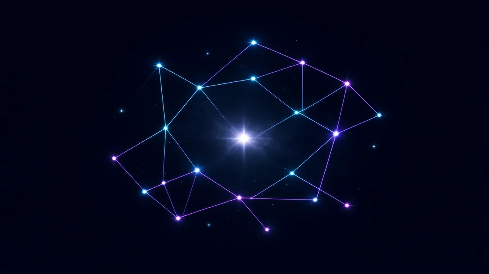

Мини-тренинг «Без меня никто не справится!»
Успеть за всех, подстраховать, доделать, помочь, проконтролировать — а внутри тяжесть и усталость?
1 500 ₽Записаться
Для руководителей, которые хотят, чтобы команда росла и достигала целей без постоянной подстраховки: мотивации, пинков, кнутов и пряников.

Нашла корень проблемы: поняла, что не знакома с правильным понятием заботы. Перестала себя винить, наоборот — горжусь, что поступила правильно по отношению к себе и к сотруднику. Выписала лидерские качества, которые уже есть, и какие буду развивать.
Участница тренинга «Лидер, а не нянька!»
Успеть за всех, подстраховать, доделать, помочь, проконтролировать — а внутри тяжесть и усталость?
 2:24Модуль · 1 месяц · 4 тренинга
2:24Модуль · 1 месяц · 4 тренингаГиперконтроль, «нянька» вместо лидера, манипуляции и повторяющиеся конфликты — замкнутые круги, в которых теряются силы, деньги и отношения. Модуль…
Понять, что стоит за вашей ситуацией и какой шаг нужен дальше. Засчитывается в покупку.
Стоимость: · Ближайшая дата:
Напишите Марине — она пришлёт детали для оплаты.
Текст сообщения (подставится в Telegram и скопируется):
Все сессии проходят онлайн и вживую — с Мариной Степановой. Группы до 8 человек.
Бесплатный тест: 8 ситуаций → персональный разбор и следующий шаг.
Пройти тест